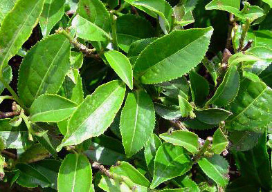

地理分布
地理分布
中国大部地区（我国主产长江以南各地）、东南亚大部分地区、斯里兰卡等其它地区。
生长环境
茶树种植的自然条件包括地貌、气候、土壤类型等。地形以丘陵为主，排水条件要好。降水充沛，年温差小、日夜温差大，无霜期长，光照条件好，这样的气候条件适宜各种类型的茶树生长，尤其适合大叶种茶树生长。冬末至夏初日照比较多，夏秋雨多雾大（云南茶区），日照较少利于茶树越冬和养分积累，利于夏秋茶的品质。砖红壤、砖红壤性红壤、山地红壤或山地黄壤、棕色森林土，这些土壤发育程度较深，结构良好，适合茶树生长。
世界各国的制茶技术，均直接或间接地来自中国。英国学者艾伦·麦克法兰在他作品
《绿色黄金：茶叶帝国》一书中说道：“只有茶叶成功地征服了全世界。”
805年，唐代时，日本和尚最澄大师及806年空海大师，留学中国研究佛学，归国后，将中国茶叶蒸青绿茶的制茶技术传入日本。
1811年，荣西和尚留学回归日本，将锅炒茶制法传入日本。
1828至1833年，茶叶产制技术传入印尼。荷属某家公司派茶师杰哥逊前后六次来中国学习研究，每次均带回茶种、制茶技术工人及器具。
1833年，沙俄来访中国采购茶籽与茶苗，1848年开始采摘，依照中国茶叶制作方法开始生产。
1834年，印度成立植茶研究发展委员会，即派秘书哥登来中国学习茶叶产制技术。购买茶籽及茶苗，并寻找、招收四川省雅州及福建省武夷山等地茶师及工人，到大吉岭等地发展茶业。